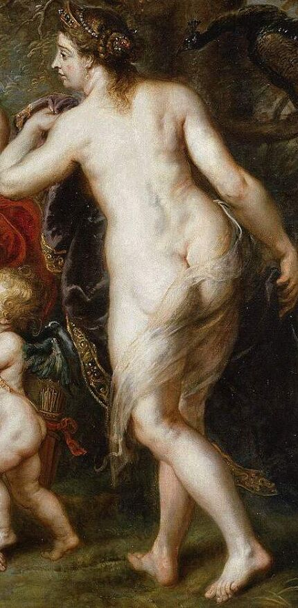

Juno
Hera
Reinar sobre toda la tierra y superar a todos en riqueza.
- Atributos
- Cetro, diadema y pavo real. En lecturas recientes, la granada, símbolo de fertilidad.
- Función
- Soberanía
- En el cuadro
- De espaldas, coronada, con el pavo real detrás.